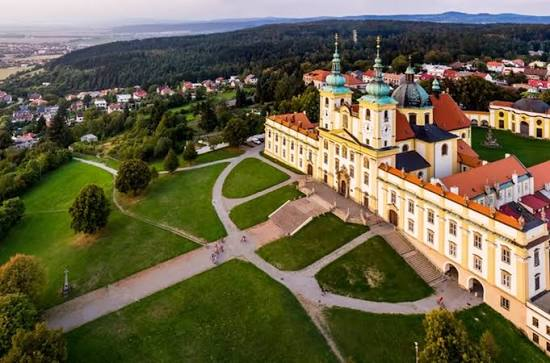
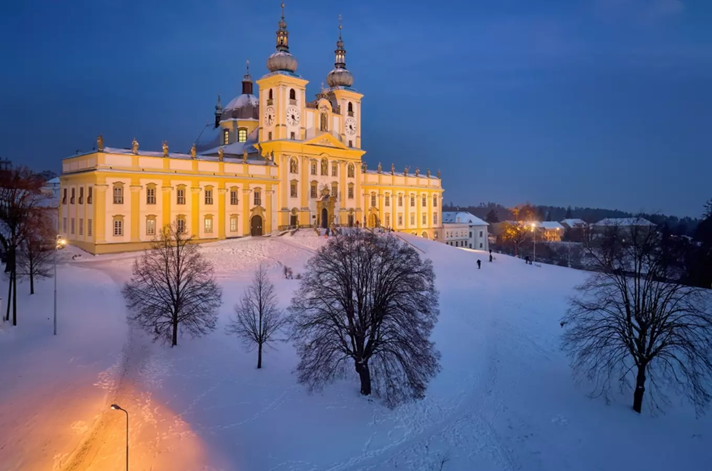
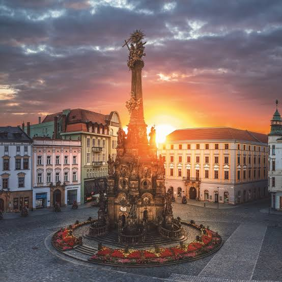
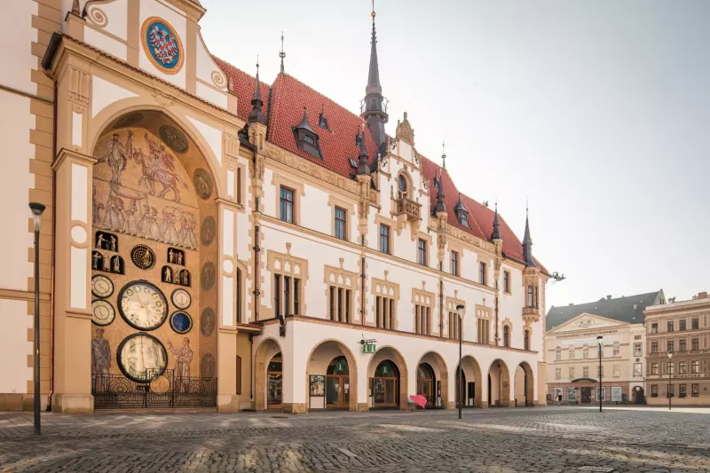

A historic city in Moravia, known for its beautiful squares, Baroque fontains, historic churches and lively student atmosphere.
Olomouc is one of the most importatnt historic cities in Moravia. Its centre is filled with old buldings, impressive churches and charming squares that reflect the city's long history.
The city is also home to Palacký University, which gives it a lively atmosphere throughout the year. With its architecture, cafés and cultural attractions, Olomouc is a great place to explore on foot.

The Holy Trinity Column stands in the Upper Square and is one of the most famous landmarks in Olomouc. This impressive Baroque monument was built in the 18th century and is decorated with religious sculptures.
The column is a UNESCO World Heritage Site and an important symbol of the city. Its detailed decorations and impressive size make it one of the most remarkable monuments in the historic centre.

The Olomouc Astronomical Clock is located on the nothern side of the Town Hall in the Upper Square. It has a long history and is known for its unusual design and colourful decorations.
The clock was significantly redesigned in the 20th century, giving it a distinctive appearance. Visitors can admire its figures and decorations while exploring the main square and the surrounding historic streets.

Olomouc offers many attractions, including historic squares, churches, fountains and peaceful parks. Visitors can explore the Upper Square, discover the city's Baroque architecture and enjoy the cafés around the centre.
The combination of rich history, impressive monuments and a lively student atmosphere makes Olomouc one of the most interesting cities to visit in Moravia.